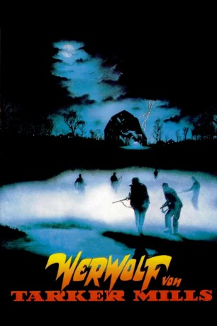

#7593 Werwolf von Tarker Mills
Alternativ: Silver Bullet
 
 IMDB-Wertung: 6.4 / 10
IMDB-Wertung: 6.4 / 10  Metascore: 0
Metascore: 0 
Die amerikanische Kleinstadt Tarker Mills wird von einer unheimlichen und unerklärlichen Mordserie heimgesucht: Immer in Vollmondnächten, beginnend im Januar, werden grauenvoll zugerichtete Leichen aufgefunden – wobei der Mörder offensichtlich keine Unterschiede zwischen jung und alt, männlich oder weiblich macht. Lediglich der gelähmte, auf einen Rollstuhl angewiesene Marty vermutet früh, dass ein Werwolf in Tarker Mills sein Unwesen treiben könnte.
Jahr: 1985
Dauer: 94 Minuten
FSK: 16
Land: USA Studio: Paramount PicturesTonspuren: DD2.0 - ,
Untertitel: Deutsch,
Auflösung: 1080p (1920x824) Größe: 6707 MB
Genre: Horror
Regisseur: Daniel Attias
Drehbuch: Stephen King
Soundtrack: John Stafford Smith
Darsteller:
 Gary Busey als Uncle Red
Gary Busey als Uncle Red Everett McGill als Reverend Lowe
Everett McGill als Reverend Lowe- Corey Haim als Marty Coslaw
- Megan Follows als Jane Coslaw
 Leon Russom als Bob Coslaw
Leon Russom als Bob Coslaw Terry O'Quinn als Sheriff Joe Haller
Terry O'Quinn als Sheriff Joe Haller Bill Smitrovich als Andy Fairton
Bill Smitrovich als Andy Fairton- Joe Wright als Brady Kincaid
 Kent Broadhurst als Herb Kincaid
Kent Broadhurst als Herb Kincaid Lawrence Tierney als Owen Knopfler
Lawrence Tierney als Owen Knopfler Tovah Feldshuh als Older Jane
Tovah Feldshuh als Older Jane James Gammon als Arnie Westrum
James Gammon als Arnie Westrum- Laura Warner als Towns Girl , uncredited
- Robin Groves als Nan Coslaw
- Heather Simmons als Tammy Sturmfuller
- James A. Baffico als Milt Sturmfuller
- Rebecca Fleming als Mrs. Sturmfuller
 William Newman als Virgil Cuts
William Newman als Virgil Cuts- Sam Stoneburner als Mayor O'Banion
- Laurens Moore als Billy McLaren
- Rick Pasotto als Aspinall
- Cassidy Eckert als Girl
- Wendy Walker als Stella Randolph
- Michael Lague als Stella's Boyfriend
- Myra Mailloux als Stella's Mother
- William Brown als Bobby Robertson
- Herb Harton als Elmer Zinneman
- David Hart als Pete Sylvester
- Graham Smith als Porter Zinneman
- Paul Butler als Edgar Rounds
- Crystal Field als Maggie Andrews
- Julius LeFlore als Smokey
- Roxanne Aalam als Uncle Red's Girl
- Pearl Jones als Mrs. Thayer
- Ish Jones Jr. als Mr. Thayer
- Steven White als Outfielder
- Conrad McLaren als Mac
Datei: X:\Person\Stephen King\Werwolf von Tarker Mills (1985, FSK16, 1920x824).mkv seit 22.11.2017
Festplatte: HD Collection-7+mehr(A-Z)+Person
 Es gibt insgesamt 44 Filme in der Gruppe 'Person\Stephen King'
Es gibt insgesamt 44 Filme in der Gruppe 'Person\Stephen King'